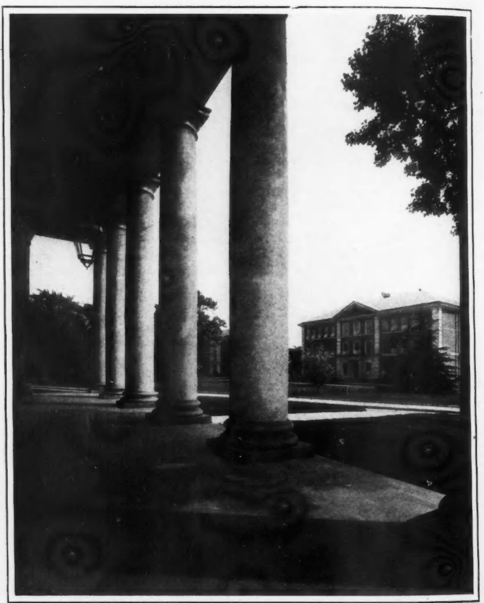

A Pilgrimage To The Negro Schools (1929)
These are snapshots, and they have the validity and weakness of snapshots. I got mere glimpses of these various institutions, and from the glimpses came impressions and judgments. In some cases these impressions are doubtless right, in others, just as surely they are quite wrong. I give them, therefore, not as final judgments, but simply for what they are worth, and | shall be glad to know of any mistakes I may have made.
Palmer and Petersburg
The Palmer Institute at Sedalia has a distinct individuality and a certain little air of culture. There is vim and enthusiasm, sunlight and air. Perhaps the institution feels a bit new and self-conscious and over-eager, and yet it is genuine. It has buildings, good-class rooms, and a teachers’ home that is homelike. It needs a library.
I am confirmed in my feeling that the Virginia Normal and Collegiate Institute at Petersburg is a well-run institution. It has, for instance, one of the best school libraries that I know: a library that is not a miscellaneous collection of old books, but a new thing planned and bought for use and used. It is building the most complete set of student dormitories that I saw in my journey. And what it needs, as so many institutions need, is some method of getting rid of buildings already there.
What shall one do with an old building? The great central hall at Petersburg is a monstrosity. It ought to be sunk into a deep hole and covered up. A general destruction at Shaw would be an improvement. Johnson Smith could spare a couple of buildings, and so can Allen at Columbia. Bethune-Cookman, Waters, Haines, Atlanta and Fisk have all one or two or more buildings that need to be burned.
But to go back to Petersburg. It moves like clockwork. The curriculum is complete and all-embracing in its theory, and yet, do I not seem to feel a little too much machinery, a certain lack of spontaneity and initiative on the part of the students? The student audience did not have the same air of intelligence that I found in many other places.
Shaw and Fayetteville
Shaw is grey-haired and slow. But it has a constituency. It is built deep in human hearts. It needs, physically and mentally, without doubt, thorough overhauling and readjustment to a new day.
The State Normal School at Fayetteville was a discovery. It has one beautiful building. Not many Negro institutions have beautiful buildings. As I| think back, I can see the crowning mass of the dining hall at Tuskegee. One does not easily forget it. The new quadrangle at Spelman is a fine thing and Talladega has the best and most beautiful group without ostentation, of any of the Southern institutions. But the dining hall at Fayetteville is one of the most beautiful buildings of the South.

Fayetteville is a curious mass of contradictions. It has some good dormitories, with a young, live faculty, and I have never spoken to a student audience that showed more rapt attention and intelligence; and yet, on the top of that came one astonishing adventure: Fayetteville is difficult of access, and I asked the Principal to arrange to get me to Hamlet by auto sixty miles away. He promised to hire one, but could not. Nevertheless, it mattered little. The roads were excellent and the Principal himself owns two autos: a Cadillac and a new Ford. He sent his chauffeur with me and we made the trip in an hour and a half, with an expenditure of less than three gallons of gas, and the Principal charged me Ten Dollars for the courtesy! The next time I go to Fayetteville I shall walk.
Smith, Allen and Bethune
Johnson C. Smith is sedate and staid. It has a quiet, clean campus and an air of academic withdrawal. ‘The students are a crowd of sturdy big-voiced boys and they listened with intelligence and even eagerness. But the school has too much religion and too few.young modern teachers. It lacks something of fire and vim, of freedom and aspiration. There were roses in my room.
Allen, at Columbia, had again an unusually intelligent and attentive audience. It occupies a whole city square, with many good-looking buildings. Four modest and rather pretty girls sang Negro folk songs. But they sang them with quavers, and_ halftones, and succeeded in taking every shred of melody, even out of “Steal Away”.
I spent a Saturday off at Jacksonville with Colonel Floyd, but that is another story and a long one. With him I rode down the beach to Daytona, a magnificent flight between the ocean and the air.
Bethune-Cookman, is a institution one does not easily forget. It is on exhibition and numbers of tourists pour in to see it of a Sunday. I was distressed to find my student audience behind me singing, instead of in front of me listening. I think next time I shall turn my back to the audience. But the institution has been built and planned by the indominable energy of one black woman and her enthusiastic spirit inspires it and makes it live. The students are unexpectedly alive. I talked with those in the Junior College, all alone and cosily sequestered in the Principal’s parlor with no teachers there. Goodness! but they walked into things. There were no hesitations or reticences. They started right out with social equality, racial intermarriage, companionate marriage, the sex morality of the younger generation, occupations, and so on. It was a breathless living hour, and quite worth going to Florida for.
I come back again to the extraordinary vitality and eagerness, the curiosity and intellectual freedom of these new colored students. It is beyond that of the white students that I have been talking to in numbers of Northern institutions. And I presume it is more vital because it reflects a freedom but very recently gained and not yet quite recognized. Some of the teachers rather look to me like hens with ducklings and I am sure that teachers and principals were several times on the edge of apology when | hurried to forstall them by some remark. As compared with the colored student body which I knew and bullied as a teacher and which I have seen in vague glimpses during the last twenty years, I should say that since 1920 intellectual revolution had struck the colored college student; and trustees and teachers had better yield gracefully. Indeed this is what they show many signs of doing.

Waters and Charleston
I rode back from Daytona with the President of Edward Waters and stopped at Jacksonville to lecture for this college. Edward Waters is an A. M. E. School and it is down at the heels. It has one good building, and that characteristically, is a building for theological students who are not there. Yet the African A. M. E. Church in Florida is vigorous and well organized. ‘The school has valuable land, although the titles are clouded by failure to pay taxes. The student body looks dull and unintelligent. Vigorous organization is needed here to save their institution.
Charleston is always Charleston, with its Mona Lisa smile, and its hereditary hospitality. I go there to pick up threads of the past. There were two colored banks. One has survived, and it is the one that deserved to survive. Avery is still the city High School and the city still refuses to support it; the students looked awake lining the gallery, and sang well. There was a little dinner before the lecture with singular cross-currents of religion and art, education and business, compromise and resentment. The audience was intelligent.
Jim-Crow
I rode to Augusta, starting early. This riding in the South is interesting. From New York to Sedalia, 463 miles, I went in a Pullman. After reaching the South I traveled in a Pullman, 190 miles back to Virginia—and then 275 miles from Columbia to Jacksonville; 166 miles from Atlanta to Tuskegee and 205 miles from Birmingham to Nashville.
In all these cases, however, special and careful arrangements had to be made. Friends of mine who knew some white persons or officials of importance, had to intercede and conduct subtle negotiations. Where the matter was a night ride, as from Greensboro to Petersburg, Columbia to Jacksonville, and Birmingham to Nashville, the matter was arranged with a certain secrecy and ease. After all, the white folk did not see their dark passenger until morning had dawned, and he was already there. And in most cases, even then, they said nothing. Indeed, at Petersburg, they were quite polite, and at Jacksonville and Nashville, they bore up without comment, so far as I could see. The matter of the day ride from Atlanta to Tuskegee, was of course much more grave. I paid $6.30 to ride in the drawing room. If I had been white, I could have ridden in some of the empty seats of the main car at a cost of less than $2.00.
On the “Jim Crow” car I rode frequently and at length. From Petersburg to Raleigh,190 miles, over the Seaboard: the Negro coach was half of a smoker and not as modern a coach as that of the whites. It was, however, clean and the conductor said “please” when he asked for tickets. This is a decided improvement over ten years ago. The news boy, or rather the news old man, was unobtrusive and kept in his place. From Selma to Fayetteville, I rode fifty miles on a separate coach, old and empty. From Hamlet to Charlotte I rode seventy miles over the Seaboard in a miserably dirty car which any decent State Board of Health would have condemned.
From Charlotte to Columbia I was on the Southern in a fairly clean coach, but very slow and roundabout, taking nearly six hours to go 108 miles. From Jacksonville to Charleston, I not only could get no Pullman for the all-day ride of nearly three hundred miles, but I could not even get a ticket on the nine o’clock train, which was the fast train, and connected with Charleston by coach. I must go on the 9:05, which took an hour longer!
I remembered of old that ride from Charleston to Augusta, five hours for 150 miles. From Nashville, north, there were difficulties about certain crack trains. The Noon train which makes only one stop to Bowling Green was all Pullman. I could not go on that. I had to take the half past eleven train, which occupied three hours instead of two. From Bowling Green to Cincinnati, had I been white, I should have taken the 10:41, arriving bright and rested, at 8:00 A.M. As it was, I started the next morning and took the 9:46, having an all-day ride of 231 miles, looking out at principally nothing, from an almost empty car.
My chief joy in these “Jim Crow” rides was these empty cars. The automobile is certainly bringing just retribution upon the silly profiteering of Jim Crow. All over and everywhere the colored people are traveling in their automobiles. They took me from Raleigh to Selma, sixty miles, by auto; from Fayetteville to Hamlet, sixty miles; from Jacksonville to Daytona, and back, 200 miles; from Tuskegee to Talladega, 95 miles, and from Talladega to Birmingham, 121 miles; five hundred and thirty-six miles by auto, and only my lack of time kept me from increasing this. By auto, of course, we avoided all sorts of things: the waits for tickets in the depot; at Charlotte, the ticket agent served every single white person at the white window before he came around to the colored window. I must have stood for fifteen minutes. The matter of food and luncheons was, of course, made easy. In fact, the only discriminations that we chanced upon was one at which we heartily laughed: a filling Station on the Jacksonville-Daytona road had a sign “For white trade only”. We passed it four times and saw no single car there. “These Crackers persist in being fools!” says my companion.
Especially is the automobile a boon for the colored Bishops, the officials of fraternal societies, insurance agents, and the like. I remember once that the venerable Bishop Turner stricken with paralysis, could for neither love nor money, hire a Pullman berth from Savannah to Atlanta. They fixed the old man up in the “Tim Crow” smoker across two seats. Yesterday, I saw the African A. M. F. Bishop of Florida. He was gliding along in his Cadillac car with a chauffeur on the way from Jacksonville to Atlanta. He looked extremely comfortable.
Augusta and Atlanta
Augusta shows a sort of dogged stagnation. It is the home of rich Northern golfers, grim cotton mills, and disinherited black folk. For fifty years it has refused any substantial improvement to its Negro schools and the Negro section still has its unpaved _ streets. Increasing _ poverty among the poor white folk is leading to every effort among the well-to-do whites to displace Negro labor. In fact, this movement is characteristic of the Southeast. It is perhaps widest in Florida, where the whites have poured in from Georgia and Alabama, like a plague of locusts. Wherever they could get a Negro’s job by legislation or mob violence, they did so. The Negroes underbid them only by semi-servile work, as for instance, when white women of Jacksonville canvassed the business center for white truckmen; it was revealed that the colored truckmen not only drove their trucks, but loaded and underloaded them; which, of course, no lordly white men would be expected to do! So in Augusta, the colored people are fighting for lowly jobs.
Haines Institute looked grey and slow. Its guiding genius still sits within, sedate and firm, and lonesome. Yes, Lucy Laney looks lonesome. Haines calls for new blood and new blood means new money. ‘There was an intelligent and responsive audience, both of citizens and of students.
Atlanta is taller and fiercer and richer. A terrible blood-sucking crowded hell with heavens for the white rich, roundabout, outside. Money, money and gaud. No culture, no humanity, American in the crassest sense. Here even as in Jacksonville and Augusta, they are piling the white “Crackers” on black folk, and adding insult. At the depot, no colored persons can hire a yellow cab, and no black man can keep his cab at or even near the depot. All the Negro quarter is neglected. “The main bridge from the center of Negro population out past Atlanta University to the High School is broken down and roped off. The High School and all the colored schools have two and three sessions a day. Down in the low bottoms is the unpaved mud and unsewered homes of the black poor, looking much as they did twenty years ago, when I first saw them. Ugliness is rampant in Atlanta save in the white residential developments that circle roundabout and add suave and gracious beauty to the carcass of the city. A city of dope and coca-cola. Atlanta University is falling behind in buildings and equipment. It has its old spirit, its library and laboratories and a good body of students, but they are not as enthusiastic and do not give the evidence of intelligence that I saw in many other schools. New blood and new ideas are needed in the faculty; and yet probably no institution in the South has so significant a body of loyal alumni. Over across the hill are Morehouse and Spelman. 1 did not see Morehouse in the light, but the alert body of Morehouse and Spelman students was up to the highest mark. I could feel the audience thrill beneath me. I am not sure about the Morehouse teachers. I saw only a few. But Spelman has risen from the dead. It has a library with books, a new and beautiful quadrangle and a _ chapel which is a shrine, although one is sorry that it wasn’t built to be something more useful than a shrine. The President is an energetic woman, whom it is a pleasure to meet.
Tuskegee
And now to Tuskegee. It is twenty-five years or more since I saw Tuskegee. Booker Washington was then at his zenith and the Tuskegee idea was triumphant. It was a combination of something insistent but suspicious that led to my invitation twenty-five years ago to talk to the Tuskegee summer school. I come back to find the school a city. One can no longer speak of a single institution, or judge this mass of buildings, roads and institutions as one thing. It is a great historic growth, and most significant of all, it has grown beautiful. It lies in curving undulating hills, with pines and trees and grass, and the happy voices of thousands of young folk.
I was interested to know about these young people, but I had only time to glimpse them. In other days, Tuskegee was a silent marching regiment. It had no soul. There is still regimentation. The silence of the chapel was uncanny. The marching is overdone, and yet, the grade of the students, their intelligence, their initiative, has greatly increased. I talked to a college of over 100 students (fancy a college at Tuskegee! and no openings of graves, no waving of cerements.) They were bright-eyed men and women. They were doing something. But, of course, Tuskegee is caught in the problem of its own making. It has its artisans and its grammar school students, its High School students, and its college, it has its teachers, who are a jumble of all kinds of culture and training. Only the unity of a great ideal can carry such an_institution on to success. And there can be no doubt, it is moving on.
The National Hospital at Tuskegee is a miracle. Here black Americans have done the impossible with great buildings and beautiful grounds, and the Circle of the officers dwellings. The spirit of efficiency and discipline, is exactly the thing which even black people, a few years ago, suid we were not prepared for. Of the fifty-one Veterans’ Hospitals, this one stands well within the first half dozen. It has an excellent library with books that are read. It has secured experts, and it succeeded in the face of an Alabama mob, which threatened to lynch Robert R. Moton, unless he put white men in the control of the hospital, and sent “nigger nurse maids” to wait on white nurses, lest they touch black skins. One can hardly reconstruct that extraordinary outburst, even in memory.
There has been reconstruction at Fisk University. It is the one institution that I visited which feels thoroughly modern, and that feeling comes in some very little things. When I think that for thirteen years I had to get up at Atlanta University and eat breakfast at 6:45, I unconsciously make one test of modern culture, the hour of breakfast in these schools. It varies from 6 A. M. on. But at Fisk alone, is there a moveable breakfast hour from seven to seven thirty, with students who may go and come, within these limits. Men students smoke on the Fisk campus. I am not sure about the women. I hope they do, too. The men and women mingle quite naturally. I saw them walking and talking together at times and places, which would have sent us to the penitentiary in my day, and made them liable to hanging, drawing and quartering under the MacKenzie regime.
All this does not solve the problem of discipline by any means. It simply opens the door to its solution. There must be scores of young people who can not stand this freedom, having never been required to before. But it gives one a sigh of human relief to see baby nurses and swaddling clothes dropping at last from grownup Negro students.
Fisk has a good library. It has excellent laboratories in Chemistry and Biology. It needs buildings. In Fisk, everything except historic Jubilee and the chapel could well be swept out of
In teaching force, Fisk has the difficulty of the newer Negro colleges, It is more and more easy to get black men who know higher mathematics, but these men may not know enough not to proceed the hostess out of the dining room. Difficulties of culture and knowledge are bound to recur at an institution like Fisk. But the same thing is true when we compare Western and Eastern universities, or American and English. Knowledge comes but culture lingers. Fisk and °Talladega were the only institutions on my list that dare choose “The Russian Revolution” as one of the subjects, and on the night after the lecture, there was assembled in the historic parlors of Jubilee, a gathering that astounded me. Teachers and students mingling quite freely. A few white teachers and one or two students from Vanderbilt and other white institutions, and fifteen or sixteen representatives of foreign peoples: Chinese, Italians, South Americans, Russians, Dutch, Swiss, and others. It was an unusual and inspiring scene.
There is always one looming and insistent difficulty at Fisk: the teachers and students of white Vanderbilt and Peabody come in contact with at least the white Fisk teachers and executives. Unconsciously they will seek to dominate and advise, and the authorities at Fisk may easily be tempted to defer to this public opinion, rather than to the more reticent and poorly expressed public opinion of the black world. But right here, let Fisk beware. It went on the rocks in a former administration because the Chamber of Commerce of Nashville tried to set standards for it. The standards of Fisk University are being set today by its own Alumni and the colored world. It must continue in this line despite Vanderbilt, Peabody and all white Nashville.
Talladega is a small, quiet New England college, built in the heart of Alabama. It has splendid work in biology, a thorough going library, good dormitories, and probably the best dining hall in the colored South. It has a President who is quiet and courteous and gives his teachers and officers real authority, and it has, what seems to me, a rather unusual collection of white and colored teachers and officers. Talladega is today one of the best and best growing institutions of the South.
I made my last speech to the colored citizens of Bowling Green in a Baptist Church on a grey and drizzly Thanksgiving evening. I had missed my Thanksgiving dinner, but my audience had not, and one girl got colic while I was speaking. But it was a kindly audience and it listened. And so, out of great waters, and with billows of new knowledge rolling in my ears, I came across the Ohio to the ramparts of Cincinnati and over the Alleghanies and home.
Citation: Du Bois, W.E.B. 1929. “A Pilgrimage To The Negro Schools.” The Crisis. 36(2):43–44, 65–69.